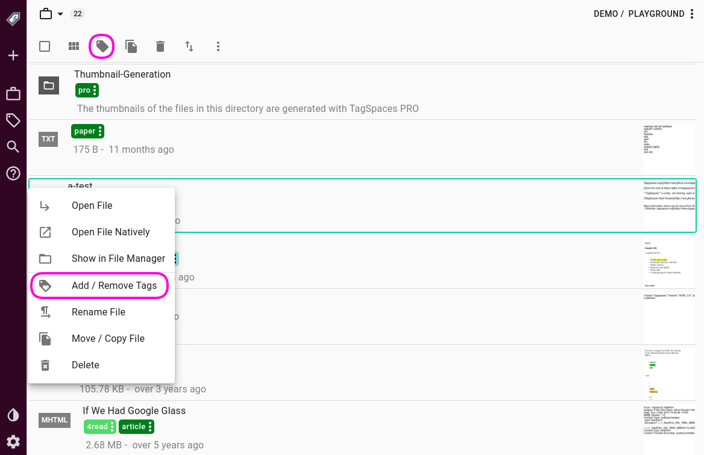
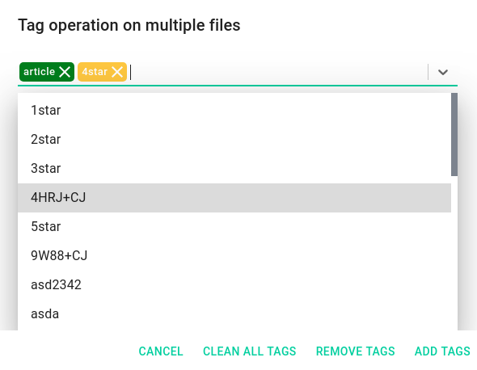

Organizing your files and folders with tags
Table of Contents
- Motivation
- File tagging based on filenames
- File tagging with sidecar file
- Folder tagging with sidecar file
- Tagging using context menus
- Tagging in file and folder properties area
- Tagging with drag and drop
- Priorities and ratings
- Smart tags
Motivation
Tagging and tags are a fresh approach to categorizing and grouping things. Tagging allows the user to label thing with their own words. They don’t need to conform to keywords or categories created by somebody else. Tagging allows you to describe what you’re seeing in your own words, to imbue the experience with your own meaning. Tagging saves your time, and can makes searching for a specific song, movie, book, document, note, or whatever you’re looking for, much easier and faster.
Tags are personal things. Tagging something is your emotional response and not simply a taxonomic decision. With using tags, you have the control to define things for yourself, and on the web -- not only for music, literature, games and movies, but also public websites, data repositories and consultations. Tagging is a new indirect way of control to express your mind and to name things your way -- you can call it a form of "freedom of speech", if you want to go that far. Tagging is a power to create your own genres in movies, music popular culture, or basically anywhere.
Key functionality in TagSpaces is the ability to add tags to files and folders. In comparison to similar product, TagSpaces does not use a central database for storing the tags but rather offers to alternative ways for saving this meta information, which are described in the following sections.
File tagging based on filenames
TagSpaces supports tagging of files in a cross platform way. It uses basically the name of the file to save this kind of meta information. As an example if you want to add the tags vacation and alps to a image named IMG-2653.jpg, the application will simply rename it to IMG-2653[vacation alps].jpg. File renaming is of course very controversial solution, with its own limitations (on some operating systems the file path length is limited to ca. 256 characters). Once embedded in the name of file, the tag stick there and can be removed only by file renaming. This makes the tagging "durable" and portable. The tags embedded in the name of a file "survives" synchronization across cloud platforms such as Dropbox and Google Drive and can be read by TagSpaces or any other file searching software on Windows, macOS, Linux or Android.

Note: Drawback of this methods is the limiting in file name/path length in some operating systems. Windows for example is limiting the file path length to ca. 256 characters, which is in general enough but could be a limitation.
File tagging with sidecar file
As alternative to saving the tags in the file names, TagSpaces offers saving this kind of data in a sidecar files located in a hidden .ts folder. The activation of this kind tagging for files, can be done in the settings of the application as shown in the following screenshot.
After the activation, the application will created for every tagged file an extra file having the same file name as the source file, but with a additional JSON extension. For example after tagging some files in some of your file locations you will have a similar file structure.
~ location (with your files)
├── subfolder1
│ ├── .ts
│ │ ├── file1.jpg.json <-- contains the tags and the description for file1.jpg
│ │ └── file2.pdf.json
│ ├── file1.jpg
│ └── file2.pdf
├── .ts
│ ├── file3.png.json
│ └── file4.docx.json
├── file3.png
└── file4.docx
The main advantage of this solution is that the name of the files is not changed after tagging and there is theoretically no limit in the number of tags you can add to a given file. If you move or rename tagged files in TagSpaces it will take care of the sidecar file, which will also renamed or moved in the appropriate folder. But if you move or rename this file in an external file manager, you have to move or rename the sidecar files by hand. The same hold true for the deleting a file from an external application. It will not automatically delete the sidecar file in the .ts folder. These drawbacks makes the tagging with sidecars less robust and future proof.
Note: If you want to have the files located in the
.tsfolder synched with some cloud service such as Dropbox or Google Drive you have to enable the synching of hidden folders and files.
Folder tagging with sidecar file
Tags added to folders in TagSpaces are save always in the co called sidecar file. The file is located in the .ts sub folder of any tagged folders and is called tsm.js
~ location (with your files)
├── subfolder1
│ ├── .ts
│ │ ├── tsm.json <-- contains tags and description for subfolder1
│ │ └── file2.pdf.json
│ └── file2.pdf
├── .ts
│ └── file4.docx.json
└── file4.docx
Note: If you want to have the files located in the
.tsfolder synched with some cloud service such as Dropbox or Google Drive you have to enable the synching of hidden folders and files.
Tagging using context menus
A context menu can be accessed by by right clicking a file or folder in the default perspective. From the context menu, select Add / Remove Tags.

This will open a popup dialog, that allows you to manage tags on the current file. If the multiple tags were selected the popup dialog will not display all tags from all files, but rather will allows you to specify tags by name, offering suggestions based on tags currently in the tag library.

The options you have here are:
- Clean all tags, which will remove all tags form the selected files
- Remove tags will remove the specified tags from the files
- Add tags will add the specified tags to the selected files
Tagging in file and folder properties area
Tags can be added in the file and folder properties area, by simple selecting them from the dropdown list or dropping the over the tagging area. For removing tags just click on the x-button located in tag components.

Tagging with drag and drop
File and folder can be tagged also with drag and drop. Here is a list of the supported drag and drop operations.
- Dragging a tag from the tag library and dropping it to a file or folder. This action is supported in the default perspective.
- Dragging a tag from the tag library and dropping it to a tagging section in file or folder properties area. This action work regardless of the current perspective.
- Drag a tag from a file or folder and drop it on another file or folder for tagging it. This action is supported in the default perspective.
- Drag and drop can be used also in the tag library for moving tags from one tag group to another

Priorities and ratings
These special tags are useful for organizing files by either importance or quality. You can apply priorities high, medium and low, and start ratings from 1start to 5star. Star ratings are yellow by default, whereas priorities are colour coded to easily distinguish visually.

Users can easily extend these tags: You can simply create a new tag and add it to e.g. the priority group, give it a name a colour and a key binding, and you are all set.
Smart tags
Smart tags are one of the advanced tagging features of TagSpaces. Smart tags can be either date and time, or location based, and offer convenient dynamic tagging tagging, based on a range of criteria.
- Time and date tags are timestamps textual representations, such as now, today, tomorrow, etc. Applying one of these tags to a file will add a timestamp, corresponding to your choice of smart tag. A timestamp has the format of
YYYMMDD~hhmmss. Tagging a file with e.g. now would apply the full timestamp down to the second, while tagging e.g. month would tag it with a subset likeYYYYMM. Smart tags have a distinguishing blue background, which they only retain in the tag library. - pro Applying a geo tag, an additional feature in TagSpaces PRO, opens up a dialog with an interactive map, where you can drop a pin. The geo-location (longitude and latitude coordinates), will be added to the selected file as a tag.

These smart tags offer a quick and easy way to timestamp documents or files, with different levels of precision. Dragging or applying a smart tag to a file will create a tag based on the current time date. Currently the following tags and formats are available:
- now - This tag will create a very precise timestamp (from current year, down to seconds) of the moment you have applied it, in a format of
YYYMMDD~HHmmss, e.g.20170314~145021 - today, tomorrow and yesterday** will apply a timestamp with the current, the next, or the previous day's date, in the format of
YYYYMMDD, e.g.20170314. - month will create a timestamp of the current month, in the format of
YYYYMM, e.g.201703 - year only applies the current year, in the format of
YYYY, e.g.2017
Note: Every newly created file will automatically have a smart tag, equivalent to now.
proCustom timestamp tagging
With the help of the custom-date smart tag, the user can add any date and time as a tag to any file or folder.
proGeo tagging
Geo Tagging can be use to add geo coordinates as a tag to any kind of files. It is useful to connect your photos or other documents with a geo location. This can be used for planning you vacation or next trip. In order to use this feature you have to use the smart tag geo-location. When you apply it to a file, the dialog shown on following screenshot will appear. Here with the help of the OpenStreetMap and you can select any location somewhere in the world. The geographic coordinates (latitude and longitude) of this location will be converted in the plus codes format, which is a for codding geo coordinates with smaller amount of characters .
proEditing smart tags
Smart tags, once applied, can be edited, or further refined be refined to include date ranges. Clicking on a tag, ans selecting Edit Tag form the context menu

will bring up the Tag Properties popup dialog. Depending on the type of the smart tag, the dialog looks differently. In the next screenshot the "editor" for the geo smart tags.

Date ranges as tags
besides being able to easily modify date, or date/time tags on their respective tabs, you can also specify date ranges in the following formats:
- Year Ranges: 2016-2018
- Month Ranges: 201605-201701
- Date Ranges: 20160531-20160603
- DateTime Ranges: 20160529~124532-20160529~154500